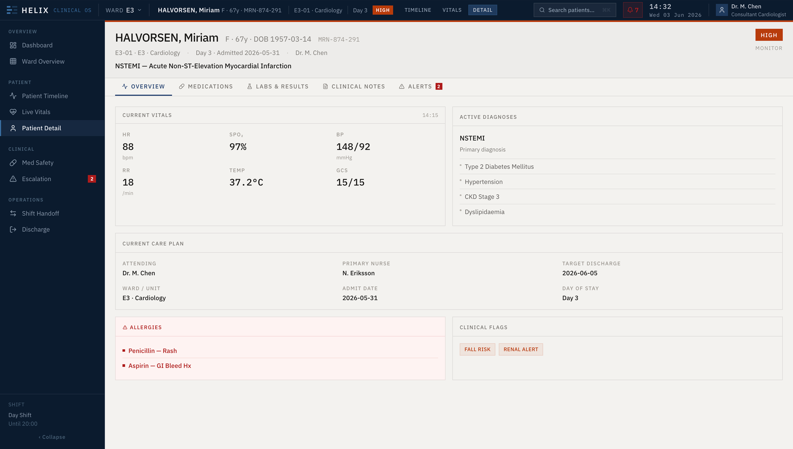
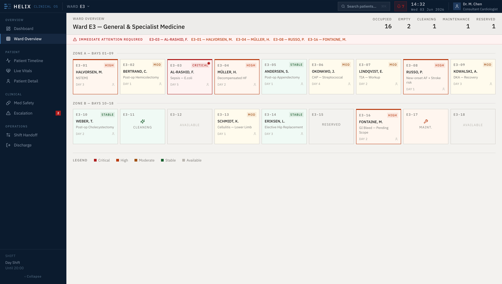
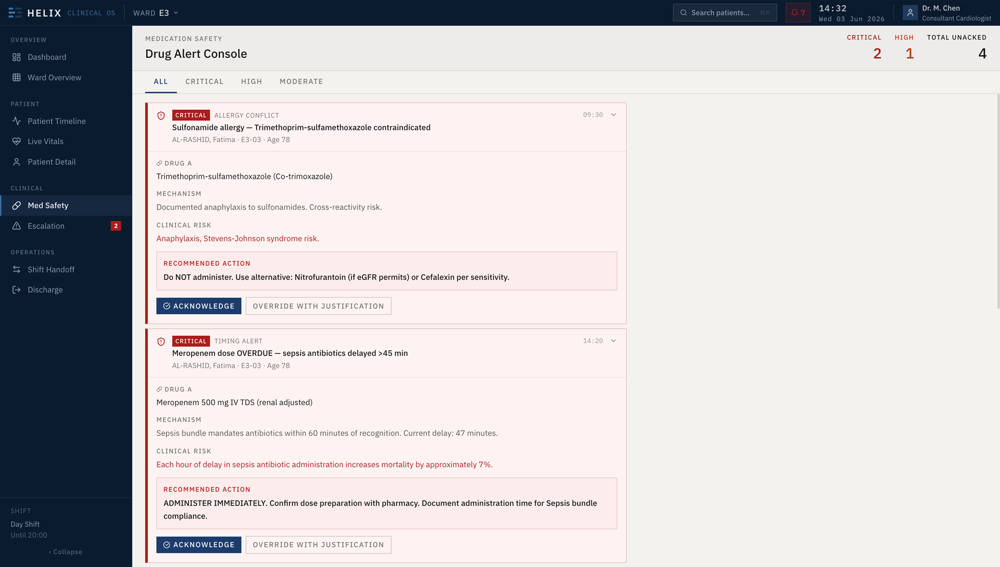
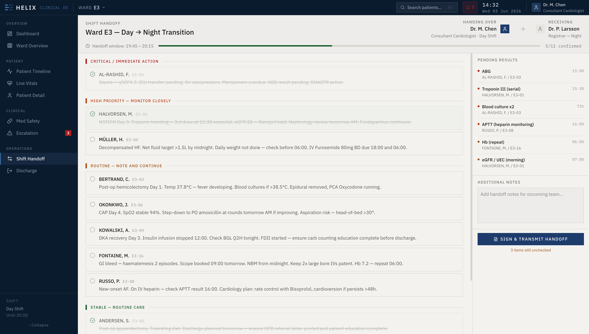

The hardest data problem on a ward isn't access. It's allocation.
Modern inpatient systems have solved the storage problem. Every vital, every lab, every medication order is recorded somewhere. The unsolved problem is human: a single clinician covering sixteen patients cannot read everything, and most of what is recorded does not need them. The work is deciding where to look — continuously, under time pressure, with a patient's safety on the line.
HELIX is a self-directed concept that treats attention as the primary object of the interface. Instead of presenting data and leaving prioritisation to the clinician, it ranks the ward by acuity, surfaces the specific actions that are due, and keeps one consistent risk language from the live floor through to the shift handoff. I designed the information architecture, the interface system, and prototypes of the core surfaces.
More data does not produce more safety. A system that ranks and routes attention does. The interface should do the triage the clinician can't.
Not “how do we show every number?” — but “of the thousands of numbers, which three need a human right now, and why?”
Abundant data, scarce attention — and an alarm system that makes it worse.
Three forces collide on the ward. Fragmentation: the picture of one patient is scattered across the EHR, the monitor, the medication record and the lab portal — no surface holds it together. Volume: a busy ward generates more signals per hour than any one clinician can process. Alarm fatigue: when most alerts are non-actionable, clinicians learn to dismiss them — and the one that mattered gets dismissed with the rest.
The cost lands at the worst moments: a deteriorating patient noticed late, a time-critical antibiotic delayed, a handoff where the urgent detail never gets said. These aren't interface inconveniences — they're the documented failure modes of inpatient care.
patient's picture
non-actionable*
signal that matters
*Alarm-fatigue burden is widely reported in patient-safety literature; figure shown is illustrative of the problem this concept addresses, not a measured result.
Three altitudes of attention, on one operational spine.
I structured HELIX around how a clinician actually zooms: from the ward (who needs me?), to the bed (where are they, what's around them?), to the patient (what's their full story?). Two clinical concerns cut across all three altitudes and never live inside a single chart — medication safety and the shift handoff — so they earn their own destinations on the operational spine.
Who needs me?
The dashboard ranks every patient by acuity and pairs it with a queue of due actions.
Where are they?
A spatial bed map puts risk onto the physical geography of the floor.
What's the story?
One tabbed record — overview, meds, labs, notes, timeline — so the story stays continuous.
Medication Safety
Interactions, allergies and timing live above the ward — a dedicated console, not a buried flag.
Shift Handoff
Continuity of care across the most dangerous boundary in the hospital — the change of shift.

Fig. 02 — Altitude 03, the patient: one tabbed record — overview, medications, labs, notes, alerts — so the story stays continuous
The list is sorted by acuity. The queue tells you what's due.
The dashboard (Fig. 01) makes two moves a conventional patient list doesn't. First, it sorts by risk, not by bed number — the sickest patient is always at the top, with a colour rail you can read from across the room. Second, it splits “status” from “to-do”: the table tells you how each patient is, while the Action Queue on the right tells you what HELIX needs you to do, ranked by acuity and time-to-harm. The vitals use a tight micro-syntax — value, direction, range — so a clinician parses a row in under a second.
Sort by acuity, not bed. The deteriorating patient never scrolls off the top.
Separate status from to-do. The queue is the system's recommendation; the clinician acts.
A vitals micro-syntax — value · trend · out-of-range colour — readable in a glance.
A list answers “who.” A floor plan answers “where.”
Charge nurses and responding teams don't think in rows — they think in geography. Who's in bay 3? Which corner of the ward is heavy tonight? The Ward Overview lays the same risk language onto the physical floor: bays grouped into zones, every occupied bed tinted by acuity, empties and cleaning states shown honestly. The “Immediate Attention” banner names the beds that can't wait, so a glance at the room maps straight to a glance at the screen.

Fig. 03 — Ward Overview: the same risk language mapped onto the physical floor, zone by zone
The safest alert system is the one that says less.
Most medication-safety tooling fails by treating every alert as equal — and clinicians respond by tuning all of them out. HELIX inverts that. Alerts are tiered by severity, and the interface gives each tier a different weight of attention. A Critical alert — an allergy conflict, a sepsis-bundle timing breach — is a full card: mechanism, clinical risk, a recommended action, and a deliberate choice between Acknowledge and Override with justification. A Moderate alert is a single quiet line. Nothing is hidden; not everything shouts.
Two design decisions carry the safety argument: every critical alert states why it matters in plain clinical language, and overriding one is never a frictionless click — it requires a recorded justification, because the audit trail is part of the safety system.

Fig. 04 — Severity-tiered alerts: critical conflicts demand a decision; moderate ones stay a quiet line
The most dangerous thirty minutes in the hospital is a UI problem.
Care fails at boundaries. When a day team hands a ward to a night team, the whole mental model of sixteen patients has to be transferred in minutes — and the detail that gets dropped is the one that hurts. HELIX makes the handoff a structured, gated transfer, not a verbal scramble: patients are grouped by the same acuity tiers, each carries the one-line “what you must know,” pending results are tracked on a side rail, and the shift cannot be signed off until every critical item is explicitly confirmed.

Fig. 05 — Shift handoff: grouped by acuity, gated on confirmation, with pending results tracked to the next shift
In a clinical tool, a colour is a clinical claim. It has to mean one thing.
The whole system rests on a single four-step ordinal scale — Critical, High, Moderate, Stable — applied identically on the dashboard rail, the bed tint, the alert card and the handoff group. If red meant “critical” in one place and “overdue” in another, the interface would be unsafe. I also separated the chrome from the canvas: a dark command surface for global navigation and a warm, low-glare working canvas for the data a clinician stares at across a twelve-hour shift. Machine-emitted metadata — MRNs, bed codes, timestamps — always sits in monospace, so a human can tell a recorded fact from an interface label.
One primary action per surface. Anything that overrides a safety check carries an explicit verb and a recorded reason — never a bare “OK”.
Fig. 06 — The token set behind every screen: one risk scale, a chrome/canvas split, vitals syntax, machine metadata
What designing for attention taught me.
As a self-directed concept, HELIX's value is in the argument it makes, not in shipped metrics. Three convictions came out of it that I'd carry into the real build: in a saturated environment, the most valuable thing an interface can do is decide what not to show; a status colour in a clinical tool is a safety contract, so the risk language has to be designed before any screen; and continuity is a feature — the handoff deserves as much design rigour as the dashboard, because that's where care actually breaks.
the clinician acts
on every surface
not frictionless
All patient names, identifiers, vitals and clinical values shown are fictional, generated for this concept. Outcome statements describe design intent, not measured results.